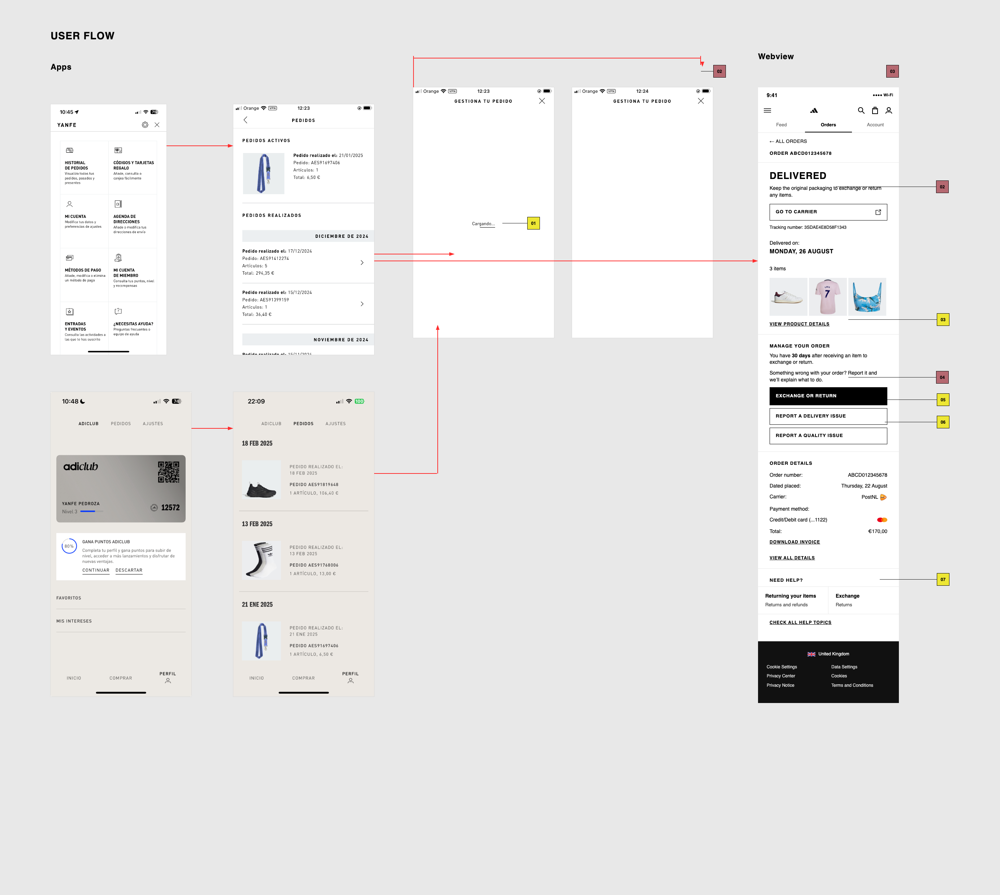
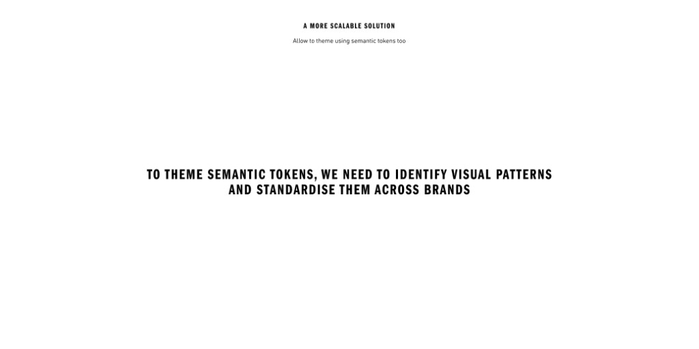
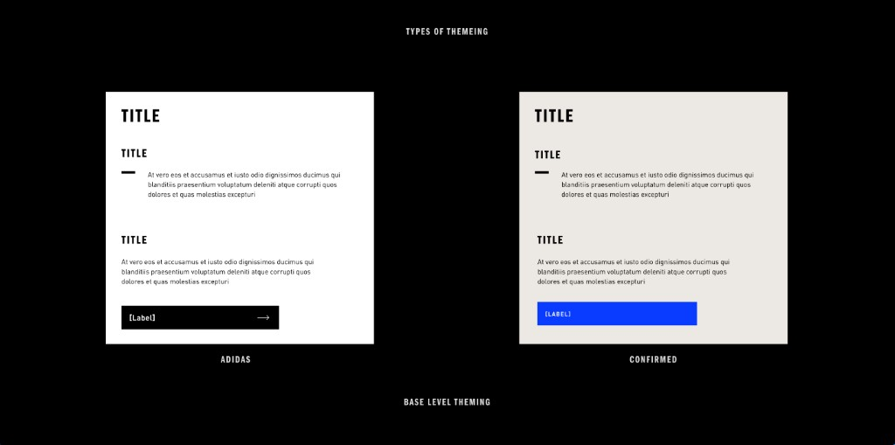
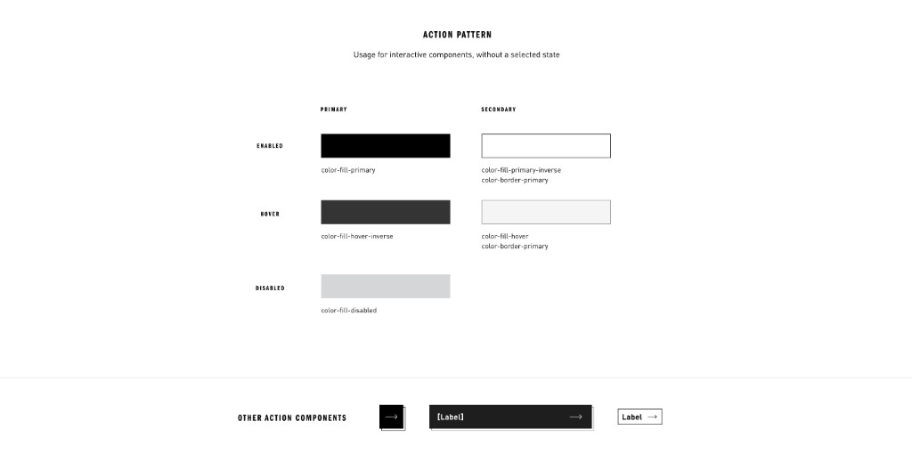
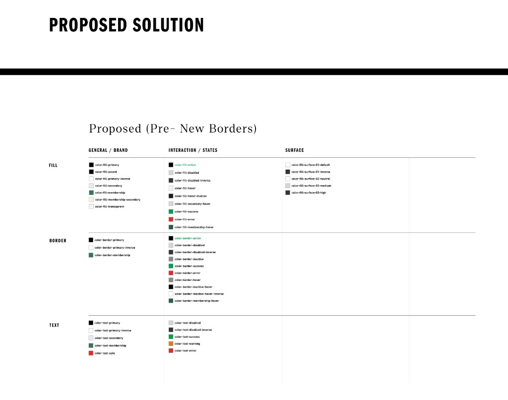

What would you like to know?
adidas and Confirmed’s post-sales flows both run as webviews embedded inside their native apps. After adidas’ 2025 brand relaunch, two experiences that were supposed to feel connected didn’t, the webviews were running on components that no longer spoke the same language.
I led the refactor of the design system, working to bring both products adidas and Confirmed, scoped to Post-sales, onto a shared token architecture without erasing what gave each brand its own identity.
AI was part of the methodology from day one. I used it to audit a file I didn’t yet fully know, and to question my own assumptions about which tokens should exist.
At the product level, shortly after a brand relaunch centered on creating a coherent experience, users moving through Post-sales on adidas and Confirmed encountered different behaviors across surfaces that were supposed to feel like part of the same ecosystem.
At the organizational level, the Post-sales team had to maintain a single webview running across two completely different brand contexts, without a shared language or token system to build from.
Underneath both problems were three different libraries required to build the Post-sales experience. Across these libraries, several generations of adidas tokens coexisted, while some components were defined almost entirely through hardcoded values. For example, adidas’ Global library had a reasonably developed token ecosystem, while Confirmed’s did not. Most of its components had no explicit tokens at all, so its design language had to be reconstructed from the components themselves before anything could be migrated.

Core adidas components lived in the Global Library, Confirmed maintained its own separate library, and some more specific components, such as the size selector, lived in a dedicated Upper Funnel library.
Post-sales also had its own Lower Funnel library for components specific to its flows. As part of the audit, we identified gaps where some of the components the project needed did not exist in any of these libraries and would have to be designed and built from scratch before being added to the Lower Funnel library.
This distributed structure was one of the key constraints of the project: while global components were maintained in a central library, individual teams also owned dedicated libraries for components specific to their area. As a result, building a single Post-sales experience meant working across multiple libraries, understanding where each component belonged, and identifying which components could be reused, which needed to be adapted, and which had to be created from scratch.
Before starting the audit, I first had to define which flows and screens were actually within the scope of the project. From there, I reviewed the three libraries and brought only the components relevant to those flows into a dedicated working file. This selection was a piece of work in itself, and it happened before AI entered the process. It gave me a single source to audit through MCP, rather than having to move back and forth between three separate libraries for every comparison.
During the initial preparation and discussions, we also saw an opportunity to use the project as a pilot with the central Design System team. We deliberately kept the scope small, focusing on the Confirmed components that genuinely needed to support theming.
The pilot was not intended to remain a proof of concept. It included a real implementation, which meant the proposed architecture had to work beyond Figma and be translated into something engineering could actually build from. That required preparing a concrete handoff for engineering as part of the pilot itself.
Manually auditing a system of this size would mean opening every variant and reviewing colors, typography, spacing, and variable bindings component by component. Instead, I used AI to analyze the working file more like a dataset. Rather than asking, “What does this button look like?”, I could ask questions such as:
Asking these kinds of questions helped establish a fundamental constraint for everything that followed: reuse what already existed before creating anything new. Defining a technically clean naming system is the easy part. Understanding and respecting the conventions an organization has already built around its system is what ultimately makes a refactor practical, adoptable, and able to integrate into the existing ecosystem.

Comparing equivalent component states across both brands became one of the most useful parts of the audit. adidas’ primary button is black, with a dark gray hover state and a light gray disabled state. Confirmed’s is blue, with a dark blue hover state and a dark neutral disabled state. Visually, they have little in common. Semantically, they are identical: primary action, hover, disabled.

This distinction changed the way I approached the project. The question I kept coming back to was: “What semantic language can both brands share?”
fill/color-fill-primary could resolve to black for adidas and blue for Confirmed. Same token, same role, different value. The architecture needed to share meaning, not appearance.
| Name | Adidas | Confirmed |
|---|---|---|
| color-fill-primary | color-000000-alpha100 | color-0a3cff-alpha100 |
| color-fill-primary-inverse | color-ffffff-alpha100 | color-ffffff-alpha100 |
| color-fill-secondary | color-eceff1-alpha100 | color-ece8e3-alpha100 |
| color-fill-secondary-hover | color-d9dbdd-alpha100 | color-e4ddd4-alpha100 |
| color-fill-disabled | color-d9dbdd-alpha100 | color-696764-alpha100 |
| color-fill-page | color-ffffff-alpha100 | color-ece8e3-alpha100 |
| color-fill-hover | color-f5f5f5-alpha100 | color-e4ddd4-alpha100 |
| color-fill-hover-inverse | color-1e1e1e-alpha100 | color-072ab2-alpha100 |
| color-fill-error | color-e32b2b-alpha100 | color-b83e3e-alpha100 |
| color-text-primary | color-000000-alpha100 | color-333232-alpha100 |
| color-text-primary-inverse | color-ffffff-alpha100 | color-ffffff-alpha100 |
| color-text-secondary | color-767677-alpha100 | color-696764-alpha100 |
| color-text-disabled | color-d9dbdd-alpha100 | color-696764-alpha100 |
| color-text-button-disabled | color-000000-alpha30 30% | color-696764-alpha100 |
| color-text-button-disabled-inverse | color-ffffff-alpha30 30% | color-ffffff-alpha100 |
| color-text-error | color-e32b2b-alpha100 | color-b83e3e-alpha100 |
| color-border-primary | color-000000-alpha100 | color-333232-alpha100 |
| color-border-primary-inverse | color-ffffff-alpha100 | color-ffffff-alpha100 |
| color-border-secondary | color-d9dbdd-alpha100 | color-ccc9c4-alpha100 |
| color-border-disabled | color-d9dbdd-alpha100 | color-ccc9c4-alpha100 |
| color-border-error | color-e32b2b-alpha100 | color-b83e3e-alpha100 |
| color-icon-primary | color-000000-alpha100 | color-333232-alpha100 |
| color-icon-primary-inverse | color-ffffff-alpha100 | color-ffffff-alpha100 |
| color-icon-secondary | color-767677-alpha100 | color-696764-alpha100 |
| color-icon-disabled | color-d9dbdd-alpha100 | color-696764-alpha100 |
| color-icon-error | color-e32b2b-alpha100 | color-b83e3e-alpha100 |
| color-surface-neutral | color-ffffff-alpha100 | color-ece8e3-alpha100 |
This principle led to a three-layer architecture:
Foundations hold shared, brand-neutral primitives such as spacing-xs and sizing-xl. Semantic tokens describe purpose — fill/color-fill-primary, text/color-text-primary, border/color-border-primary — and introduce brand differences through adidas and Confirmed modes. Components consume this semantic layer rather than referencing raw values directly.

This separation between value, meaning, and implementation allowed both brands to share the same architecture without requiring them to look the same.
The audit also surfaced the inverse problem. An existing token, color-fill, resolved to black, but was being used for two unrelated roles: the fill on primary buttons, and the fill on surfaces like tabs on dark backgrounds.
The primary button genuinely needed to change by brand — black for adidas, blue for Confirmed. The surface didn’t. That component only existed in adidas, so there was no Confirmed equivalent for it to resolve to.
Because both roles shared the same token, they’d become coupled. Adding a Confirmed mode to adapt the button also introduced a Confirmed value for a surface that didn’t even exist in that brand; not adding it meant the button couldn’t adapt across brands at all.
The problem wasn’t that they shared the same value. It was that two different semantic roles had been grouped under one token simply because, in adidas, they happened to land on the same color.
The fix was to split them. action-fill-primary became brand-sensitive, resolving through the adidas and Confirmed modes, while the surface use got its own token — a single value, with no brand modes at all.
Changing a token that was already in use came with a migration cost: existing references had to be identified, validated, and reassigned. But keeping both roles coupled would have meant future components inheriting a multibrand relationship that didn’t actually exist.

AI could sometimes work directly on the file, connected to Figma through MCP (Model Context Protocol), the layer that let it read the file’s real variables and components and apply some changes directly. It was a working partner, but it didn’t replace my work, especially since the file I was operating in wasn’t the final file, but an audit file holding only the components the project actually needed.
AI inspected local and remote variables, identified which components were bound to variables and which used hardcoded values, and helped me configure the adidas and Confirmed modes.
That removed a significant share of manual, repetitive work but more importantly, it made it possible to approach the refactor at the level of the whole system, instead of treating every component as an isolated task.
This work was done in collaboration with the central Design System team, since anything added to a shared library had to meet their standards, not just mine. It also meant that the new components could be built on the Foundations → Semantic architecture from the start.
adidas and Confirmed now share a single Foundations layer and a single Semantic collection, rather than maintaining two parallel systems, while preserving their distinct visual identities through brand modes. Not every token needs an equivalent across both brands: adidas’ membership-related tokens, for example, don’t need a Confirmed counterpart.
I didn’t use AI to design the system for me. I used it to understand the system as a whole and move faster through the more mechanical parts of the work, allowing me to focus more of my attention on the decisions that genuinely required design judgment.
AI could detect repeated values across the file, but it couldn’t determine whether they represented the same concept. It could generate a clean naming structure in seconds, but it couldn’t decide whether introducing it was worth breaking conventions the organization already relied on. It could create aliases and configure modes quickly, but deciding where a token should live — and why — still required an understanding of the brands, the product, and the system around them.
Design Systems sit at the intersection of design decisions and structured data. AI proved particularly effective on the structured side: inspecting variables at scale, identifying patterns, executing changes, and validating relationships that would have taken hours to check manually.
Decisions about meaning, naming, and abstraction still required design judgment. AI made the system faster to inspect and change; it didn’t decide what the system should mean.